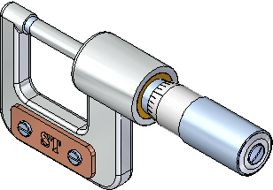

Introduction to creating assemblies (ordered)

This tutorial provides step-by-step instructions for building the assembly shown in the illustration above using the ordered modeling environment. You will learn how to:
-
Use PathFinder to manage the display of parts in the assembly.
-
Apply assembly relationships between parts.
-
Create exploded views of an assembly.
-
Create an assembly drawing of the exploded view.